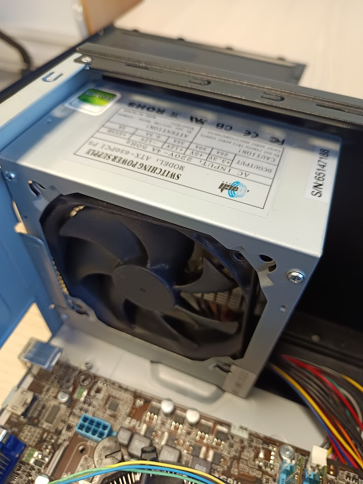

Il "porta CD" nel PC
legge i dischi tramite un diodo laser.
i dati sono scritti sul disco come una serie,
di microscopiche incensioni separate da spazi:
Un PC include compoenti come:
CPU scheda madre e memoria RAM.
Hard disk o SSD e sheda grafica.
Alimentatore case e monitor.
Scheda grafica e alimentatare.

La ventola spinge l'aria sulle fessure, trasferendo il calore dalle alette all'aria.
A questo punto una seconda ventola soffia l'aria calda fuori dal case del computer e aspira l'aria più fredda dall'esterno.
Alcuni sistemi utilizzano il raffreddamento a liquido ma anche questi richiedono la presenza di ventole.
La funzione della scheda madre non è soltanto quella di fungere da contenitore passivo dei vari dispositivi che compongono il PC
bensì ha il compito di determinare la velocità e l'efficienza con cui possono comunicare e lavorare gli elementi in essa contenuti